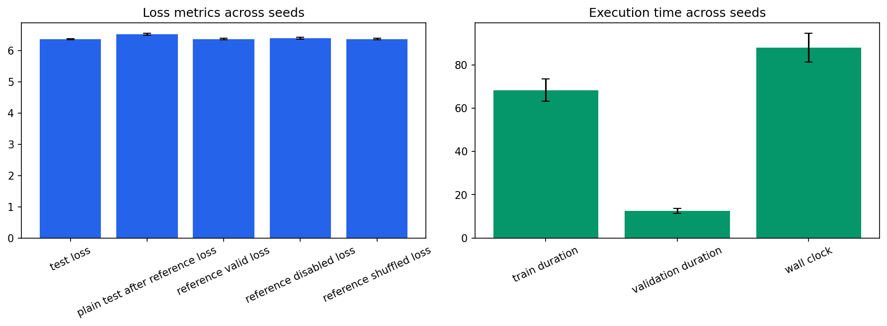

Seeds: [1, 7, 21, 42, 87]. Values are population mean +/- standard deviation.
| Test Loss | 6.35597 +/- 0.0217 |
|---|---|
| Test Perplexity | 576.057 +/- 12.6 |
| Plain Test After Reference Loss | 6.51399 +/- 0.0362 |
| Reference Valid Loss | 6.36423 +/- 0.024 |
| Reference Disabled Loss | 6.38464 +/- 0.029 |
| Reference Shuffled Loss | 6.3649 +/- 0.0236 |
| Train Duration Seconds | 68.3313 +/- 5.19 |
| Validation Duration Seconds | 12.5415 +/- 1.15 |
| Wall Clock Seconds | 87.9419 +/- 6.69 |
| Processed Tokens | 78610.8 +/- 78.4 |
